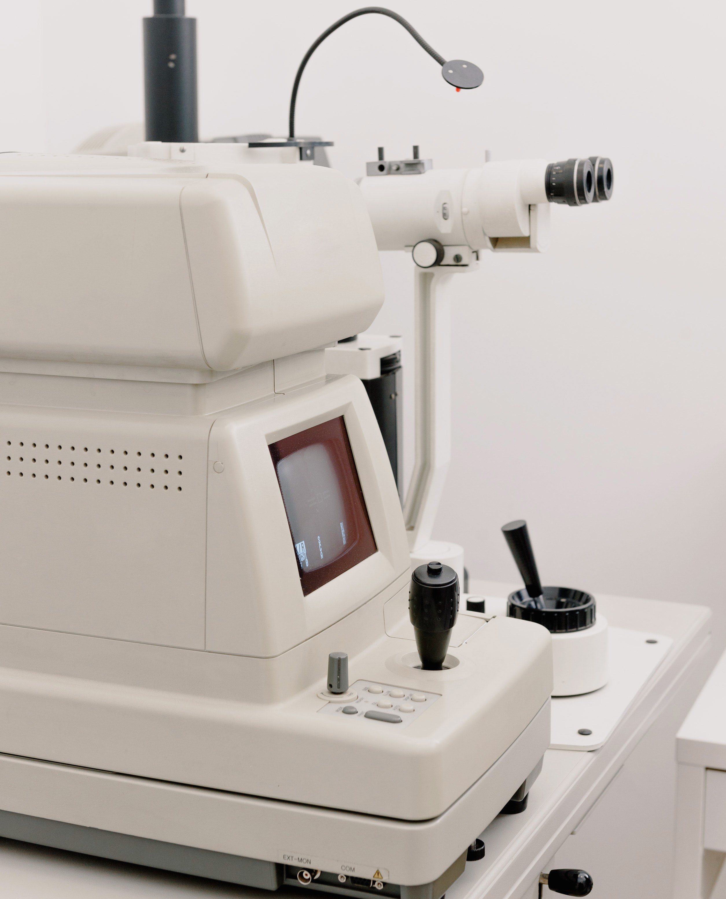

Logiciel ArcGis

Logiciel Autocad

Station Total
OUTILS DE LA GEOMATIQUE
Le traitement des données géographiques est souvent effectué dans des logiciels spécialisés appelés SIG (systèmes d'information géographique, en anglais GIS) — il en existe une petite dizaine: ArcGIS d'ESRI, GeoConcept de la société éponyme, Intr@Geo de la société Géosphère, MapInfo importé par Pitney Bowes, StarGIS, Apic et Elyx de la société STAR-APIC, GeoMedia de chez Intergraph, AutoCad Map chez Autodesk ou bien Articque Solutions9 avec Mapanddata et Cartes & Données [archive]. D'autres logiciels existent sur des métiers plus ciblés, comme EdiTop de chez Sirap pour les communes, etc. Les logiciels SIG étant souvent très chers, ce domaine connait une croissance exponentielle des logiciels libres[réf. nécessaire] tels que Grass, Jump, Udig, Quantum GIS, GvSIG, NASA World Wind…
L'intérêt d'un SIG dépendant fortement des données (elles aussi très chères), les SIG évoluent lentement vers des architectures « n-tiers » interopérables grâce au respect de normes de services web édictées par un regroupement mondial des éditeurs, l'Open Geospatial Consortium (OGC). Internet joue donc un rôle de plus en plus important dans le développement des SIG, en particulier grâce à des logiciels libres tels que MapServer, souvent plus performant que les alternatives payantes.
Enfin, les SIG professionnels reposent sur des bases de données géographiques telles qu'Oracle spatial, ArcSDE, ou PostGIS. La base de données géographique PostGIS est très puissante, libre, et gratuite.
Le but de ces outils est non seulement de pouvoir afficher les informations géographiques sur différents référentiels (par exemple, superposer une orthophotographie aux parcelles cadastrales), mais aussi de réaliser des croisements (existe-t-il une corrélation entre l'habitat social et la petite délinquance ?), d'interroger les bases (où se trouve la borne d'incendie n° 342Z, quel est son débit d'eau et comment y va-t-on ?), de créer des cartes synthétiques ou thématiques, etc.
Toutefois, pour ne pas trop charger la carte, les croisements ne peuvent dépasser 3 ou 4 variables par carte. Au-delà, il faut faire plusieurs cartes, ou, si les variables sont nombreuses, s’orienter vers des techniques comme l'iconographie des corrélations, pour une représentation sur un graphe unique.
Le tachéomètre est maintenant baptisé « station totale » (en anglais : total station), et permet de stocker dans une carte mémoire les mesures effectuées sur le terrain, pour les transférer et les traiter ensuite par ordinateur (aux formats propriétaire DXF, DWG ou autres), grâce à des programmes de DAO ou des tableurs. Aujourd'hui les appareils les plus perfectionnés intègrent une télécommande à liaison hertzienne permettant de travailler seul ; sont aussi disponibles des stations totales intégrant en plus un système GPS. Le tachéomètre est un appareil fréquemment utilisé en topographie dans toutes les opérations de lever de terrain (lever topographique), dans divers types de travaux dans les domaines des BTP et de l'industrie (notamment l'aéronautique) ainsi qu'en archéologie (relevé des objets en 3 coordonnées absolues).
Rejoignez nous sur les réseaux sociaux
Study_Geom Study_GeomOfficial Study Geomatic Study Geomatic